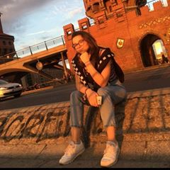

I am 19 years old and I have the french and german nationalities. However, I never lived in any of those countries until now. I was born in Poland and I lived there my whole life, attending the german school of Warsaw. After 18 years spent there, I decided to go study abroad. Now I am a student at ESSEC Business School in Paris.

I have been playing Tennis since I was 5 years old, and practice it regulary since then. In my old school I was part of the Volleyball team as well as of the general sports team, representing the school at several championships. Additionally to that I love skiing, which I do at least once a year.
Not many people know that I really like singing and listening to Jazz music. I sing and perform on my own but I was also part of my school choir for 3 years. Besides that my passion is "la patisserie" and cooking in general.
I really enjoy photograpy. Here are some of my favourite pictures I took:)